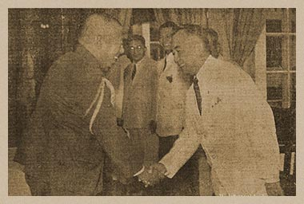

|
j
a v a s c r i p t |
June 17, 1943
Tribune: "Independence in 1943 ... Premier Tojo Gives Assurance; Japanese Military Administration head asks [for] Greater Efforts ... P.I. Collaboration Lauded." Bewildered Filipinos are asking — what cooperation? La Vanguardia: "Vargas and Aquino express the gratitude of the Philippines." Vargas called it "The happiest day in the history of the Philippines"; Duran said it's "Independence with honor"; and Guinto expressed "supreme happiness." So after nearly four centuries, we are finally going to get independence. How do the Filipinos feel about it? I went to town and back twice today, riding in carretelas, streetcars and buses — all the while observing the people. No one talked about it, waved flags, cheered or jumped in excitement. Nobody slapped the back of a Japanese soldier or civilian in gratitude for granting us independence. Even the Scribe sensed it: "Everyone among us 18 million Filipinos ought to be congratulating everybody else," he wrote, knowing that we're not. Filipinos ask each other: What's the catch? A Filipino Army? Conscription? Will the Japanese leave? Not willingly!

Dir. Gen. Military Admin. & Vargas:
Let's Shake! |
|
|
|
|